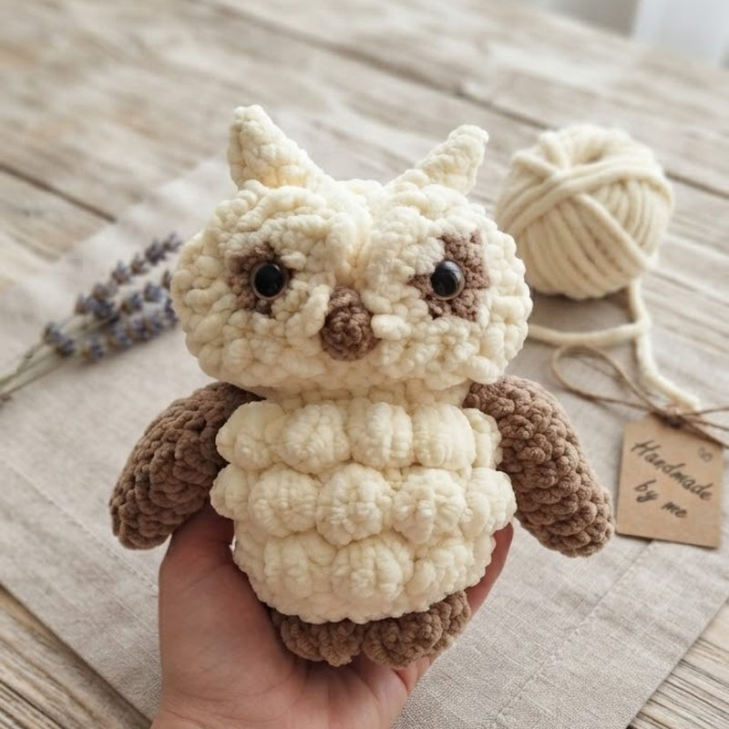
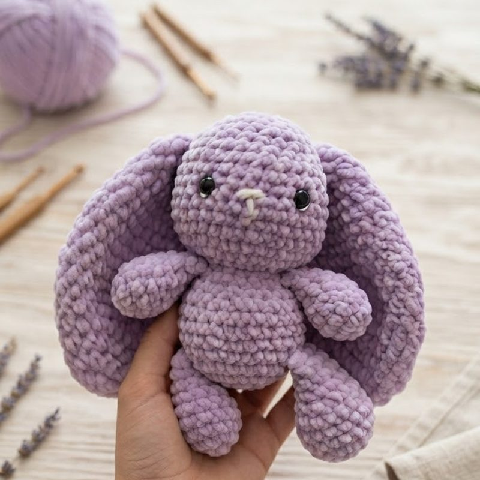
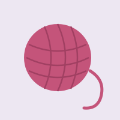

Small creatures, made from one thread
Amigurumi is the Japanese craft of crocheting small stuffed toys. One hook and one ball of yarn are enough to make a bear, a rabbit, or a cat. This is what I make, and how each loop comes together.
Two pieces

The owl
Worked in chenille yarn, which is soft but unforgiving — every stitch shows, and a mistake means pulling back the whole round. The textured chest is bobble stitch, one bobble at a time.

The lilac rabbit
The ears are flat panels crocheted separately, so they fold over on their own without any wire inside. Chenille again — it gives the whole piece that plush, slightly fuzzy edge.
How a chain is made

One loop follows another
Everything starts with a chain of loops. Below, each loop appears in turn — the way a hook works its way along the yarn.